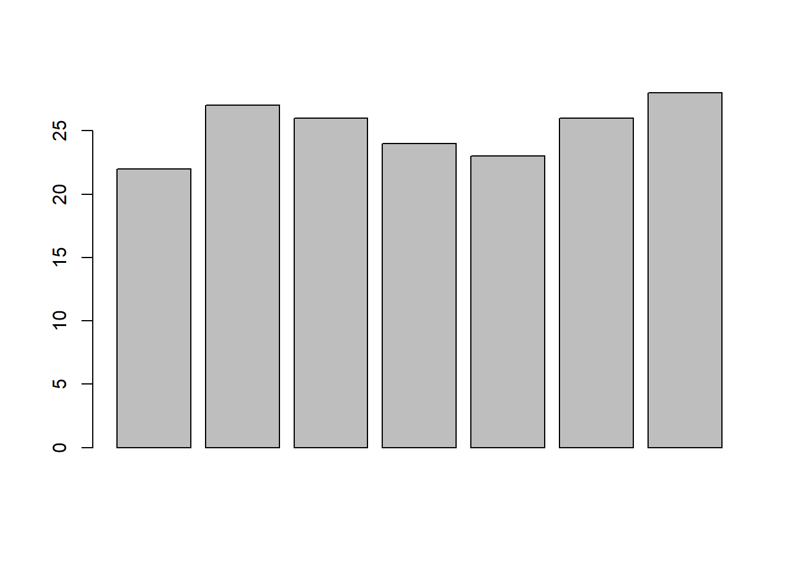

8 Graphical Representation
In this section we will see how to draw basic and commonly used graphs and charts in R. Advanced plotting and graphs will be discussed later. Following graphs and charts are discussed here.
- Bar Plot or Bar Chart
- Pie Diagram or Pie Chart
- Histogram
- Scatter Plot
- Box Plot
8.1 Bar Plot
let us suppose, we have a vector of maximum temperatures (in degree Celsius) for seven days as follows.
max.temp <- c(22, 27, 26, 24, 23, 26, 28)Drawing barplot for the data
barplot(max.temp)
To modify the way our data is plotted, barplot() function may require a great deal of input. About them may be found in the help area.
# To know more about barplot
?barplot Some of the often used ones include main, which assigns a title, xlab and ylab, which offer axis labels, names.arg, which names each bar, col, which specifies colour, and others.
By adding the option horiz = TRUE, we can also plot bars in a horizontal direction.
# barchart with added parameters
barplot(max.temp,
main = "Maximum Temperatures in a Week",
xlab = "Degree Celsius",
ylab = "Day",
names.arg = c("Sun", "Mon", "Tue", "Wed", "Thu", "Fri", "Sat"),
col = "#F9E79F", # hex colour code
horiz = FALSE)8.1.1 Hex colour codes
Hexadecimal colors are the visual language to tell a colour. When you want your graph to have a certain color, you tell it in the hex code.
Figure 8.1: Hex codes for colour
A 6-symbol code made up of up to three 2-symbol parts is known as a hex colour code. Each of the elements’ two symbols represents a colour value between 0 and 255. Hex colour code begins with a hash symbol(#).
Element 1: Red value
Element 2: Green value
Element 3: Blue value
The code converts each value into a distinct 2-digit alphanumeric code. For instance, the hexadecimal representation of the RGB value (224, 105, 16) is E06910.
More than 16 million distinct colours may be shown using hexadecimal coding, which is estimated to be more than the human eye can distinguish.
Popular hex codes
| Color | RGB | Hex Color Code |
|---|---|---|
| Black | (0, 0, 0) | #000000 |
| Blue | (0, 0, 255) | #0000FF |
| Gray | (128, 128, 128) | #808080 |
| Green | (0, 128, 0) | #008000 |
| Purple | (128, 0, 128) | #800080 |
| Red | (255, 0, 0) | #FF0000 |
| White | (255, 255, 255) | #FFFFFF |
8.1.1.1 How to get hex codes
You can easily find the hex code for the colour you want using a colour picker. Just copy the hex code and use it in the R code.
Figure 8.2: Colour picker
8.2 Boxplot
A box and whisker plot, often known as a box plot, shows a data set’s five-number summary. The minimum, first quartile, median, third quartile, and maximum make up the five-number summary.
A box is drawn from the first quartile to the third quartile in a box plot. At the median, a vertical line passes through the box. Each quartile’s whiskers lead to the minimum or maximum.
8.2.1 Anatomy of boxplot
Figure 8.3 below shows the parts of a box plot
Figure 8.3: Anatomy of boxplot